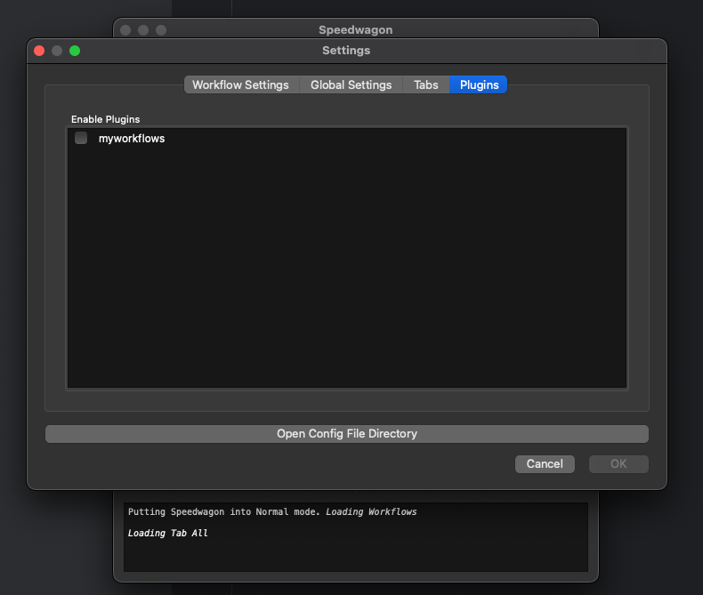

Getting Started¶
Set up the Development Environment¶
Create a new Python directory for your python project to run
Create a virtual env and activate it
On Mac or Linux terminal:
$ python3 -m venv venv $ source venv/bin/activate
On Windows command line:
> py -m venv venv > venv\Scripts\activate
Create a pyproject.toml file
The pyroject.toml file should have at least a [project] section with the following keys defined:
name: This should be the name of your plugin
version: The starting version of your plugin
dependencies: Include at least “speedwagon”
For example:
[project] name = "myspeedwagonplugin" version = "0.1.0" dependencies = [ "speedwagon" ]
Create a Python package.
This should be the same name that you used for the project in the pyproject.toml file. At this point your project should look like this.
project_root_dir/ ├── myspeedwagonplugin/ │ └── __init__.py ├── pyproject.toml └── venv/
Generate plugin hook file with registered_workflows() function.
There are no strict requirements for the naming of this file outside of ones that Python requires. For my example, I will use hook.py. Create this file inside the Python package folder you just created.
Use the following code as a starting point.
# hook.py import speedwagon from typing import Dict, Type @speedwagon.hookimpl def registered_workflows() -> Dict[str, Type[speedwagon.workflow]]: """Register workflows with the plugin. Returns: Returns a dictionary with the name of the workflow for the key and the class of the workflow for the value. """ return {}
At this point your project should look like this.
project_root_dir/ ├── myspeedwagonplugin/ │ ├── __init__.py │ └── hook.py ├── pyproject.toml └── venv/
Register this hook for Speedwagon
To register your plugin so that speedwagon can find it, edit the pyproject.toml file by adding a new [project.entry-points.’speedwagon.plugins’] section after the [project] section. Here, provide a name for the workflows and the import path to the hook file containing the
registered_workflows()function.[project] name = "myspeedwagonplugin" version = "0.1.0" dependencies = [ "speedwagon==0.3.1" ] [project.entry-points.'speedwagon.plugins'] myworkflows = 'myspeedwagonplugin.hook'
pip install in editing mode
Use “pip install” with the “-e” flag to install your plugin so that speedwagon can find it while you are developing. Make sure you have activated your virtual env from step 1 first .
(venv) $ pip install -e .
You are done setting up the Speedwagon plugin development environment.
Installing the GUI Framework¶
Speedwagon does not preinstall the GUI dependency because speedwagon can run without a desktop gui. But if you are developing a plugin, you probably want to install the gui. It’s much easier that way.
$ pip install PySide6
Collecting PySide6
Obtaining dependency information for PySide6 from https://files.pythonhosted.org/packages/1e/a4/8fd2f8f1d34db1f44a99d4f994e9f81498960161547319b7ce6258acd6bd/PySide6-6.7.0-cp39-abi3-macosx_11_0_universal2.whl.metadata
Downloading PySide6-6.7.0-cp39-abi3-macosx_11_0_universal2.whl.metadata (5.3 kB)
Requirement already satisfied: shiboken6==6.7.0 in ./venv/lib/python3.12/site-packages (from PySide6) (6.7.0)
Collecting PySide6-Essentials==6.7.0 (from PySide6)
Obtaining dependency information for PySide6-Essentials==6.7.0 from https://files.pythonhosted.org/packages/5d/81/f64c263851956139cc7012f39d0d174464a2618015962c9ecc82d751330a/PySide6_Essentials-6.7.0-cp39-abi3-macosx_11_0_universal2.whl.metadata
Downloading PySide6_Essentials-6.7.0-cp39-abi3-macosx_11_0_universal2.whl.metadata (3.7 kB)
Collecting PySide6-Addons==6.7.0 (from PySide6)
Obtaining dependency information for PySide6-Addons==6.7.0 from https://files.pythonhosted.org/packages/d9/f6/6a95948f729e0f96ba249482b445fca02bf435024f723d59943e2f699942/PySide6_Addons-6.7.0-cp39-abi3-macosx_11_0_universal2.whl.metadata
Downloading PySide6_Addons-6.7.0-cp39-abi3-macosx_11_0_universal2.whl.metadata (4.0 kB)
Downloading PySide6-6.7.0-cp39-abi3-macosx_11_0_universal2.whl (525 kB)
──────────────────────────────────────── 525.3/525.3 kB 4.2 MB/s eta 0:00:00
Downloading PySide6_Addons-6.7.0-cp39-abi3-macosx_11_0_universal2.whl (273.7 MB)
──────────────────────────────────────── 273.7/273.7 MB 8.1 MB/s eta 0:00:00
Downloading PySide6_Essentials-6.7.0-cp39-abi3-macosx_11_0_universal2.whl (153.4 MB)
──────────────────────────────────────── 153.4/153.4 MB 12.2 MB/s eta 0:00:00
Installing collected packages: PySide6-Essentials, PySide6-Addons, PySide6
Successfully installed PySide6-6.7.0 PySide6-Addons-6.7.0 PySide6-Essentials-6.7.0
Launch speedwagon
$ python -m speedwagon
You should now be able to see and load your plugin within the Speedwagon application.
Right now the plugin contains no workflows. Let’s fix that.
Build New Speedwagon Workflow¶
- Create a new Python file.
This can be a file named anything as long as it ends in a .py
- Import speedwagon.Workflow
In the new file, import speedwagon
# workflows.py import speedwagon
Create a new class that subclasses
speedwagon.Workflow.Add a name and description class attributes. The name attribute should be how you want the workflow to list it self. The description field should be a small summary of what it does and explain the workflow parameters
# workflows.py import speedwagon class DirectoryContentWorkflow(speedwagon.Workflow): name = "Show Folder Content" description = """Locates the content of a folder input: path to a directory """
Add any user input arguments.
While this step is technically optional, you will most likely need to get some input from the user. To add an input section to the workflow, override the
job_options()method.class DirectoryContentWorkflow(speedwagon.Workflow): ... def job_options(self): return [ speedwagon.workflow.DirectorySelect("input"), ]
Locate information about a job.
You need to implement
discover_task_metadataabstract method for any class derived fromspeedwagon.Workflow(). This method is for gathering any information that will be used for creating subtasks.class DirectoryContentWorkflow(speedwagon.Workflow): ... def discover_task_metadata(self, initial_results, additional_data, **user_args) my_input = user_args['input'] return [ { "path": file.path, "name": file.name } for file in os.scandir(my_input) ]
Write a Subtask Class
Unless your workflow includes any prewritten subtask, you will need to create your own.
Create a new class the that inherits from
speedwagon.tasks.Subtask. The only method that is required is thework()method. You can implement the class however you want.class GetFileInformation(speedwagon.tasks.Subtask): def __init__(self, file_name, file_path): self.file_name = file_name self.file_path = file_path def work(self): self.log(f"Reading {self.file_name}") file_stats = os.stat(self.file_path) self.set_results( { "name": self.file_name, "size": file_stats.st_size } ) return True
Assign data located in
discover_task_metadata()to theSubtaskclass GetFileInformation(speedwagon.tasks.Subtask): ... def create_new_task(self, task_builder, **job_args): task = GetFileInformation( file_name=job_args['name'], file_path=job_args['path'] ) task_builder.add_subtask(task)
Example of a complete Workflow and Subtask full implemented with TypeHints added.
# workflows.py
import speedwagon
import os
from typing import List, Any, Dict, Type
class DirectoryContentWorkflow(speedwagon.Workflow):
name = "Show Folder Content"
description = """Locates the content of a folder
input: path to a directory
"""
def discover_task_metadata(
self,
initial_results: List[Any],
additional_data: Dict[str, Any],
**user_args
) -> List[dict]:
my_input = user_args['input']
return [
{
"path": file.path,
"name": file.name
} for file in os.scandir(my_input)
]
def create_new_task(self, task_builder: speedwagon.tasks.TaskBuilder, **job_args) -> None:
task = GetFileInformation(
file_name=job_args['name'],
file_path=job_args['path']
)
task_builder.add_subtask(task)
def job_options(self) -> List[AbsOutputOptionDataType]:
return [
speedwagon.workflow.DirectorySelect("input"),
]
@classmethod
def generate_report(
cls,
results: List[Result],
**user_args
) -> Optional[str]:
report_header_lines = [
f'The content of: {user_args["input"]}',
""
]
report_content_lines = [
f' * {result.data["name"]} -> size: {result.data["size"]}'
for result in results
]
return "\n".join(report_header_lines + report_content_lines)
class GetFileInformation(speedwagon.tasks.Subtask):
def __init__(self, file_name: str, file_path: str) -> None:
self.file_name = file_name
self.file_path = file_path
def work(self) -> bool:
self.log(f"Reading {self.file_name}")
file_stats = os.stat(self.file_path)
self.set_results(
{
"name": self.file_name,
"size": file_stats.st_size
}
)
return True
Register Workflow as Part of Your Plugin¶
Open the python file that contains the registered_workflows() function.
In the dictionary that returns from that function add an entry. This entry should use name of the workflow for the
key and the value should be the class to the workflow.
For example:
- if your project files are as such…
project_root_dir/ ├── myspeedwagonplugin/ │ ├── __init__.py │ ├── workflows.py │ └── hook.py ├── pyproject.toml └── venv/
# hook.py
import speedwagon
from typing import Dict, Type
from myspeedwagonplugin.workflows import SampleWorkflow
@speedwagon.hookimpl
def registered_workflows() -> Dict[str, Type[speedwagon.workflow]]:
"""Register workflows with the plugin.
Returns:
Returns a dictionary with the name of the workflow for the key and the
class of the workflow for the value.
"""
return {
"My sample workflow": SampleWorkflow
}

{kind=link}